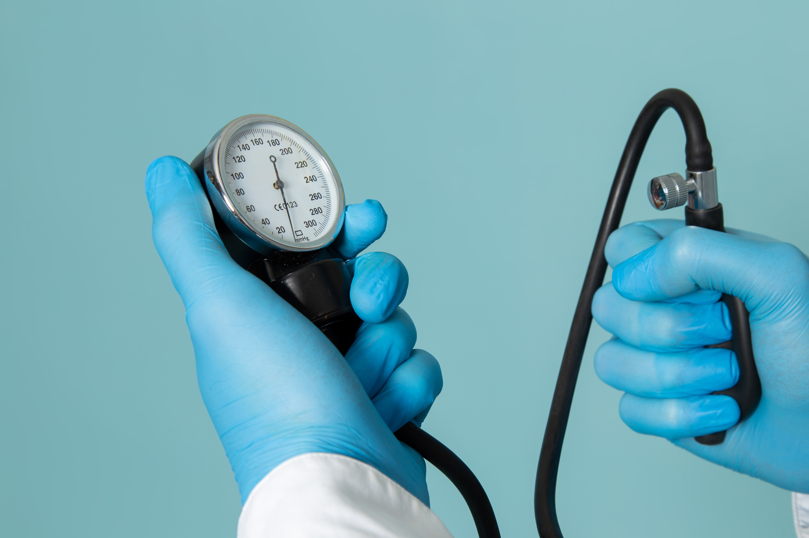

Understanding Blood Pressure Regulation

Blood pressure is the force blood exerts against arterial walls. It is determined by cardiac output (how much blood the heart pumps) and peripheral vascular resistance (the diameter of small arteries). The body maintains pressure within a narrow range through baroreceptors—sensors in the carotid arteries and aorta that signal the brain to adjust heart rate and vessel tone.
Hypotension, or low blood pressure, occurs when this regulatory system fails or when blood volume drops. While some people naturally run low without symptoms, others experience inadequate blood flow to the brain and other organs, leading to dizziness, fainting, or in severe cases, shock.
Diagnostic Scope
This assessment identifies abnormally low blood pressure levels that may compromise oxygen delivery to vital organs. By monitoring orthostatic shifts and diastolic thresholds, the system screens for symptoms such as syncope, vertigo, and blurred vision to determine physiological stability.
Types of Hypotension
Orthostatic Hypotension
A drop in blood pressure upon standing, often causing dizziness. Can be caused by dehydration, medications, or autonomic nervous system disorders.
Postprandial Hypotension
Blood pressure falls within 1–2 hours after eating. More common in older adults and people with Parkinson's disease or diabetes.
Neurally Mediated Hypotension
Occurs after standing for long periods or in response to emotional stress. Results from faulty signaling between heart and brain.
Severe Hypotension (Shock)
A medical emergency where blood pressure drops too low to sustain life. Causes include massive blood loss, severe infection, or anaphylaxis.
What Causes Low Blood Pressure?
Hypotension can result from a wide range of conditions, from temporary dehydration to serious underlying disorders.
Common causes
- Dehydration from vomiting, diarrhea, or inadequate fluid intake.
- Blood loss (internal or external bleeding).
- Pregnancy (due to circulatory changes).
- Prolonged bed rest.
Medication‑related
- Diuretics (water pills).
- Beta‑blockers and other heart medications.
- Antidepressants (especially tricyclics).
- Medications for erectile dysfunction.
- Parkinson's disease drugs.
Medical conditions
- Heart problems (bradycardia, heart valve disease).
- Endocrine disorders (adrenal insufficiency, thyroid disease).
- Autonomic neuropathy (from diabetes).
- Severe infection (septic shock).
- Anaphylaxis (severe allergic reaction).
Managing Low Blood Pressure
Treatment depends on the underlying cause and whether symptoms are present. For many, simple lifestyle adjustments are enough.
- Increase fluid intake. Staying well‑hydrated boosts blood volume.
- Add more salt to your diet. (Only after checking with your doctor, as excess salt can harm some people.)
- Wear compression stockings. They reduce blood pooling in the legs.
- Stand up slowly. Avoid sudden position changes.
- Eat smaller, more frequent meals. Helps prevent postprandial drops.
- Avoid alcohol. It can lower pressure further.
- Review medications. Your doctor may adjust doses or switch drugs.
Recent Advances in Hypotension Research
Closed‑loop fluid resuscitation
Automated systems that deliver IV fluids based on real‑time blood pressure monitoring are being tested in critical care to prevent hypotensive episodes.
Novel vasopressors
New drugs like angiotension II offer additional options for treating distributive shock when traditional pressors fail.
Wearable sensors for early warning
Continuous non‑invasive monitors can detect impending orthostatic hypotension, allowing patients to sit or lie down before fainting.
When to seek further evaluation: If you experience recurrent fainting, severe dizziness, or if your blood pressure readings are persistently below 90/60 mmHg with symptoms, consult your doctor. Unexplained hypotension may signal an underlying condition that requires treatment.